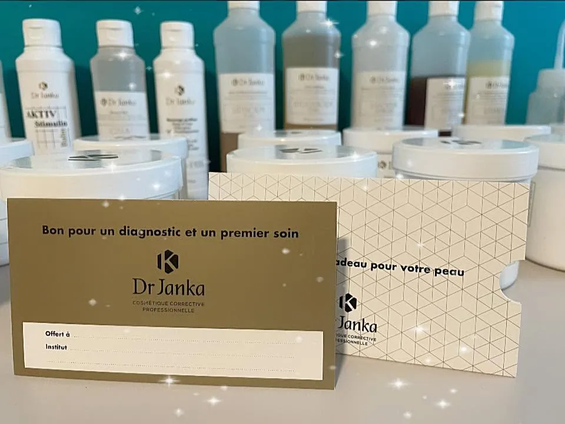
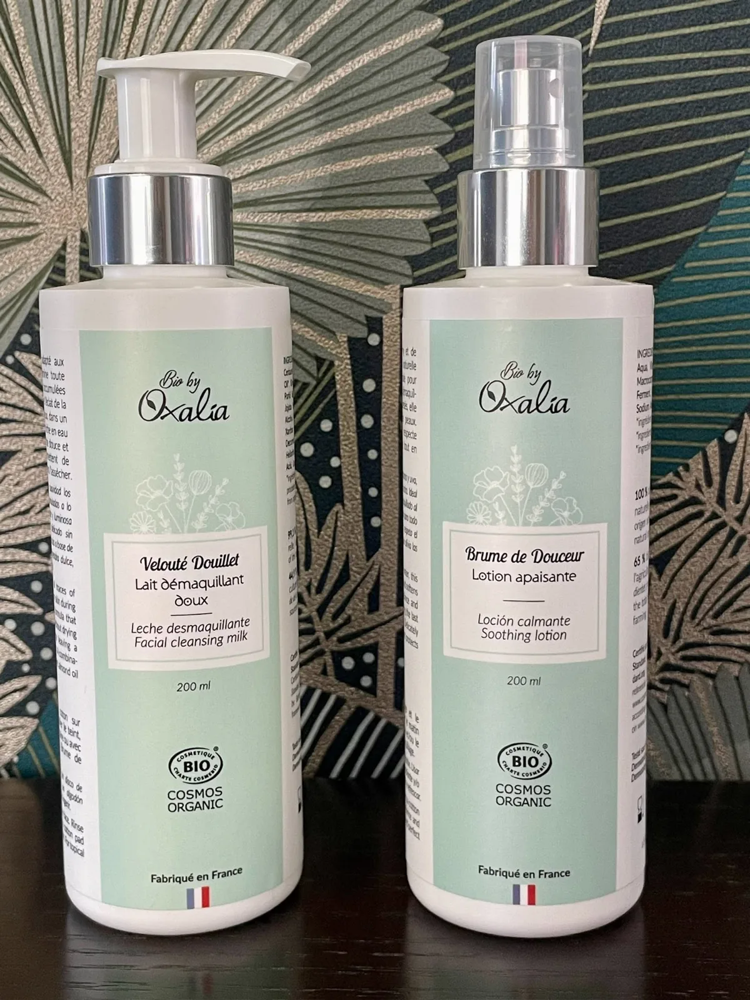
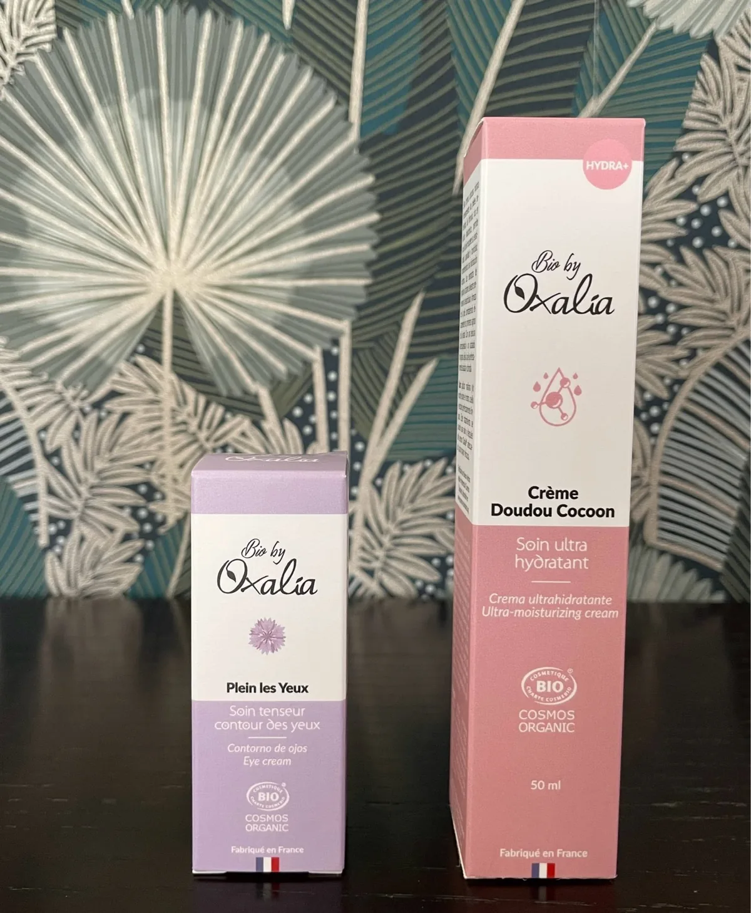
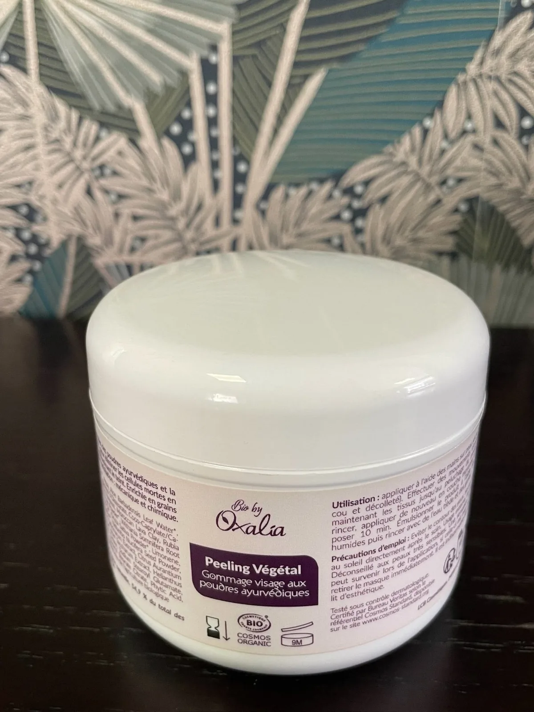
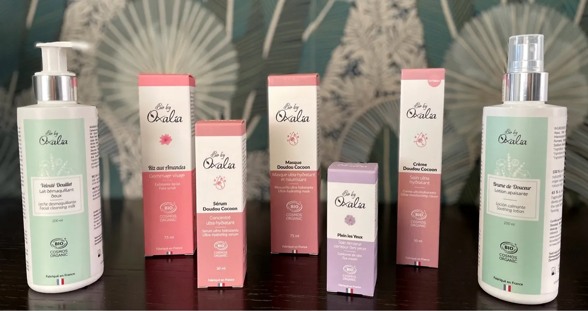
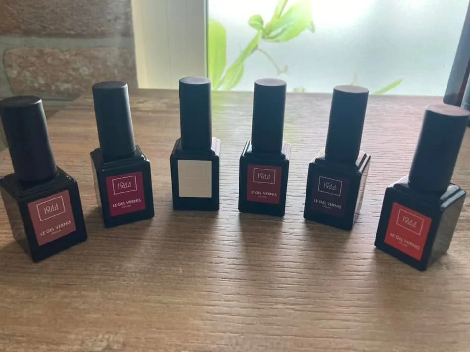

Soins correctifs Dr Janka
Des soins du visage ciblés avec la gamme de cosmétique corrective professionnelle Dr Janka.
Institut de soins · Entre-Deux
Le rituel d'une peau saine
Soins du visage correctifs, soins bio, épilation à la cire végétale, massages et ongles : un moment pour votre peau, à l'Entre-Deux.
La maison
Chez Kérato Réunion, chaque soin suit un fil : comprendre votre peau, choisir la bonne gamme, puis prendre le temps. Des soins correctifs Dr Janka aux soins bio Oxalia, tout est pensé pour une peau qui respire.
Les soins
Des soins du visage ciblés avec la gamme de cosmétique corrective professionnelle Dr Janka.
Des soins du visage bio, certifiés Cosmos Organic et fabriqués en France, tout en douceur.
L'épilation à la cire végétale Epiloderm.
Un temps de détente pour relâcher les tensions, sur rendez-vous.
Vernis laque, semi-permanent et maquillage pour finir en beauté.

Le diagnostic
Le soin commence par regarder votre peau. La gamme Dr Janka, pensée pour les instituts, accompagne des soins du visage correctifs, ajustés à ce dont elle a besoin.
Dans la cabine
Des soins bio fabriqués en France, aux noms qui donnent déjà envie de s'installer.




Faites glisser pour voir les soins · Photos : page Facebook Kérato Réunion
Les bons gestes
Des conseils que Kérato Réunion partage sur sa page : une routine simple, chaque jour.
Démaquiller en douceur, pour une peau libre de respirer.
Apaiser et rafraîchir avant le soin.
Nourrir la peau avec une crème adaptée.
Un soin à part pour le regard.

Les mains
Vernis laque, semi-permanent, ongles : la touche finale d'un moment pour soi, dans une palette de teintes à choisir sur place.
À la une · 5 novembre 2026
« Retrouvez-moi chez Coiffure les Alizés à l'Entre-Deux »Publication partagée sur la page Facebook Kérato Réunion. Les créneaux se calent directement avec l'institut.
Offrir pour Noël
Un moment pour la peau à glisser sous le sapin pour une maman, une amie, une sœur : Kérato Réunion propose une carte cadeau.
Idée de cadeau : un diagnostic et un premier soin Offrir une carte cadeauRendez-vous
Entre-Deux · 97414